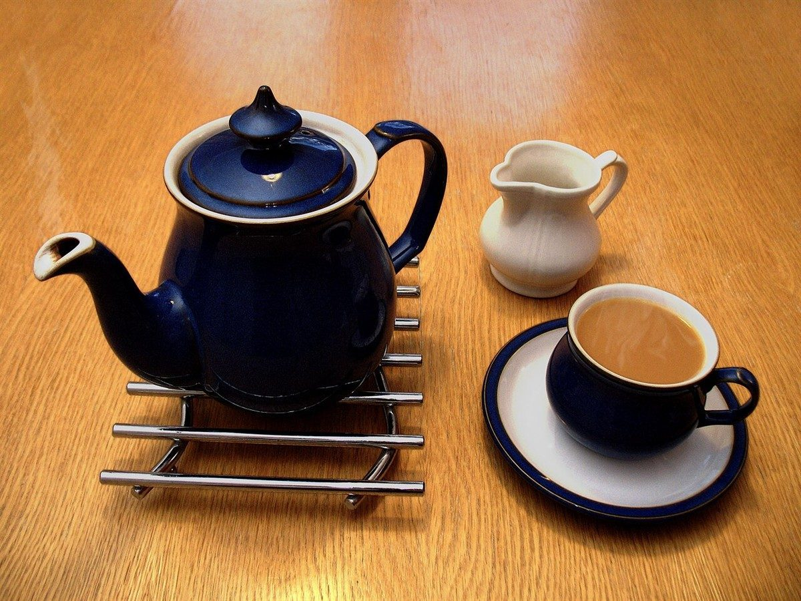
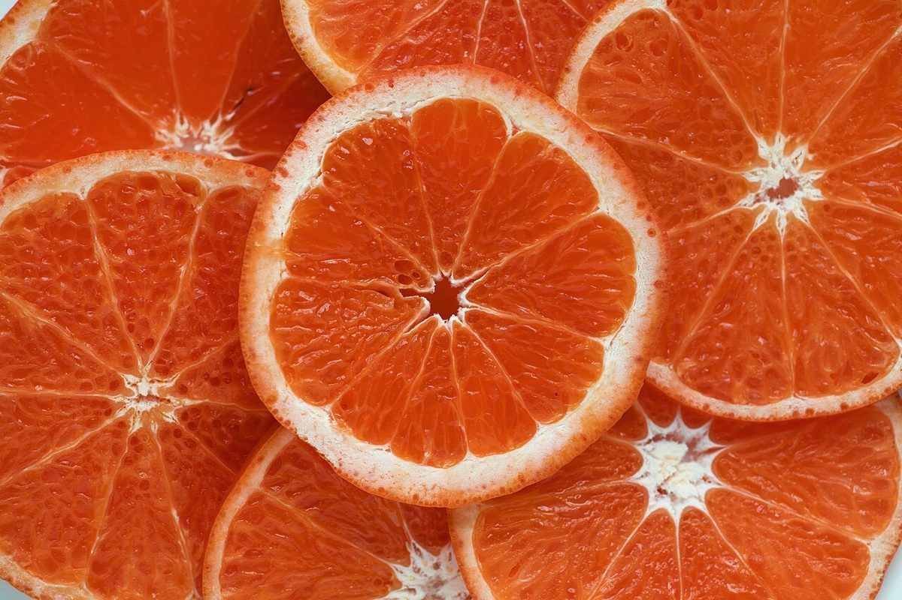
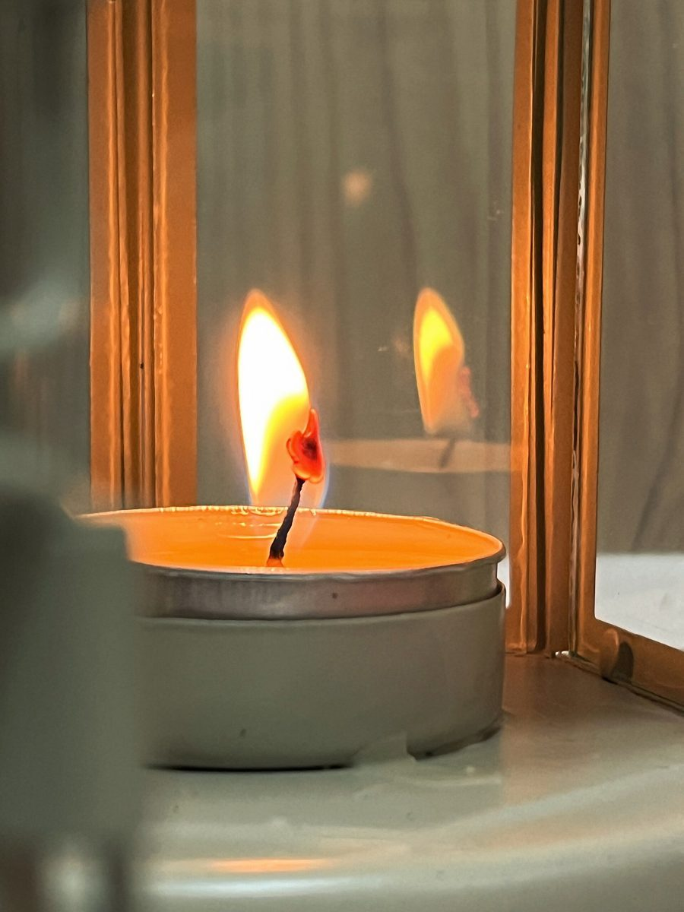
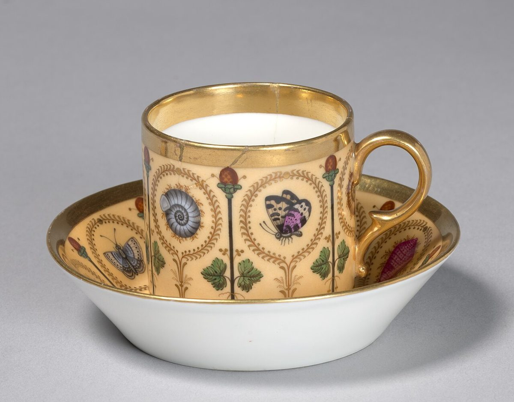
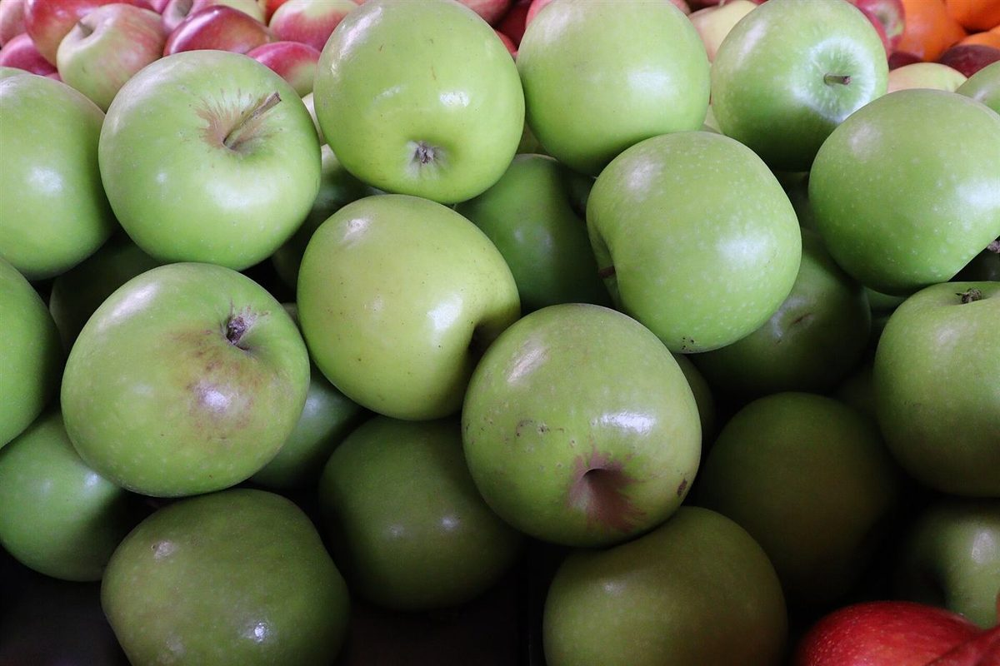
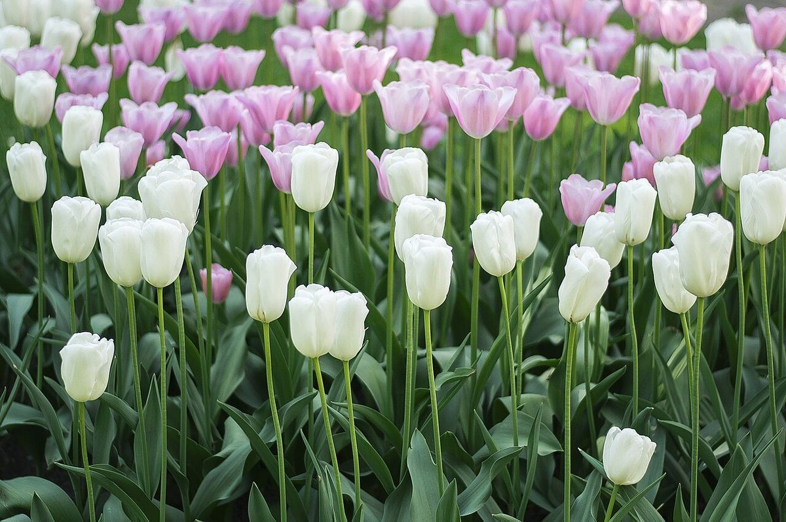

制作側の連想
エアフライヤーの部位を、配置図にしてみる
エアフライヤー(熱風で調理する卓上の家電)の部位を図にしたもので、制作側の連想です。お店の理念・由来とは無関係で、実際の製品の仕様を示すものでもありません。六つの部位に番号をふり、上の図と並べています。
凡例
六つの部位
- 1バスケット(調理かご)食材を入れる、底に網や細かい穴のあるかご。引き出しのように本体から抜き差しする。
- 2ハンドル(取っ手)バスケットの前面についていて、引き出すときに持つ部分。
- 3本体ケース(外装)全体を包む箱形の外側。内側の熱を閉じこめる役目がある。
- 4操作パネル(ダイヤルと表示窓)温度や時間を合わせる部分。つまみと小さな表示窓が並ぶ。
- 5加熱部(ヒーターとファン)上部にあり、ヒーターで温めた空気をファンで下へ送り出す。
- 6排気口(スリット)内部の熱い空気が外へ抜ける、細い隙間。
写真(イメージ)
写真(イメージ)




写真はイメージです。お店のものではありません。
ご案内
お店のこと(確認できたものだけ)
| 所在地 | 〒737-2604 広島県呉市川尻町小仁方１丁目６−１５ |
|---|---|
| 電話 | 準備中 |
| 営業時間 | 準備中 |
| 定休日 | 準備中 |
| ご予約 | 準備中 |
| 駐車場 | 準備中 |
| SNS | Instagram @coralcafe_310 |